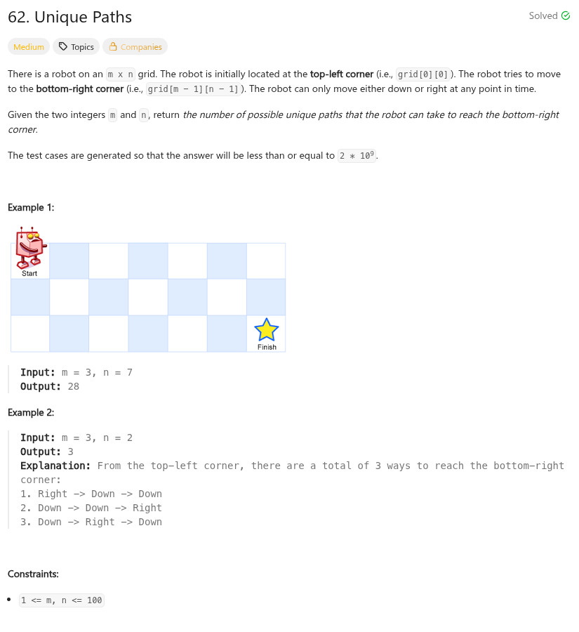

參考資訊：
https://www.cnblogs.com/grandyang/p/4353555.html
題目：

int uniquePaths(int m, int n)
{
int i = 0;
int j = 0;
int r[100][100] = { 0 };
for (j = 0; j < n; j++) {
r[0][j] = 1;
}
for (i = 0; i < m; i++) {
r[i][0] = 1;
}
for (i = 1; i < m; i++) {
for (j = 1; j < n; j++) {
r[i][j] = r[i - 1][j] + r[i][j - 1];
}
}
return r[m - 1][n - 1];
}